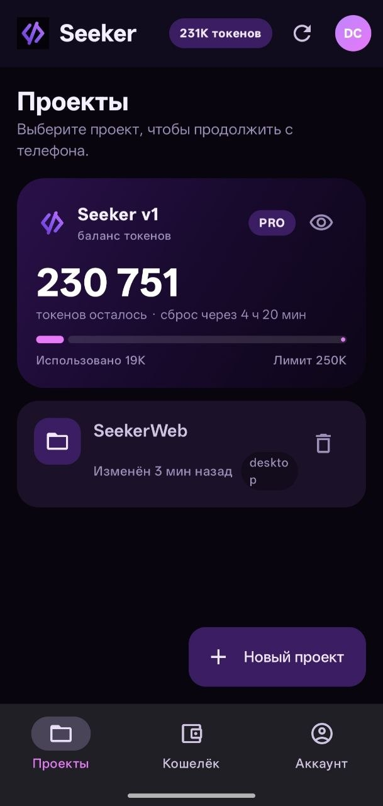
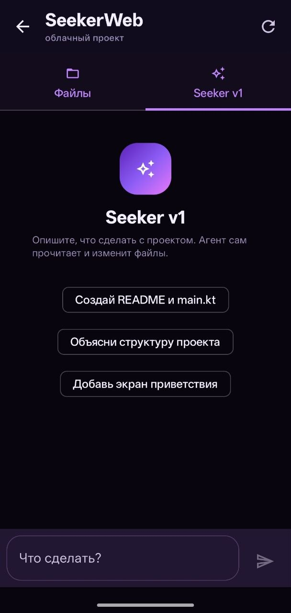

Редактор без тормозов
Подсветка синтаксиса, поиск по проекту, дерево файлов и вкладки. Всё привычное — только быстрее и легче.
Seeker — редактор кода со встроенным AI-агентом. На ПК у вас полноценная среда разработки, а в мобильном приложении — те же проекты: открывайте файлы, правьте строки и просите Seeker v1 что-то сделать прямо с телефона. В метро, в поезде, где угодно.


Привычная среда для кода — и агент, который не просто подсказывает, а делает: читает файлы, вносит правки, объясняет результат.
Подсветка синтаксиса, поиск по проекту, дерево файлов и вкладки. Всё привычное — только быстрее и легче.
Понимает задачу целиком: сам открывает нужные файлы, предлагает и применяет изменения, комментирует шаги.
Телефон — это второй редактор, а не просмотрщик. Те же проекты, те же файлы, тот же AI. Без ручных экспортов.
Запускайте команды и сразу видьте вывод — в отдельной панели или прямо в диалоге с агентом.
Агент показывает, что именно меняет. Принимайте, отклоняйте или уточняйте — ничего не происходит молча.
В Seeker Pro — лимит в два миллиона токенов на работу с агентом. Израсходовали — лимит обновляется каждые 5 часов.
Открыли проект на ПК — он уже доступен в мобильном приложении Seeker. Правки с телефона подхватывает десктоп, а позвать агента можно в один тап: «поправь вёрстку», «объясни этот модуль», «сделай тёмную тему».
Вы описываете задачу словами — он находит файлы, вносит изменения и проверяет результат. На ПК и на телефоне одинаково.
Не нужно объяснять, где лежит файл. Агент сам читает структуру, находит нужные модули и работает с реальным кодом.
Меняет именно то, что нужно, не переписывая файл целиком. Каждое изменение видно до применения.
Собирает проект, ставит зависимости, читает вывод ошибок — и исправляет по факту, а не наугад.
В Pro доступен лимит 2 000 000 токенов на работу с агентом. Лимит сбрасывается каждые 5 часов — без простоя.
Одна подписка Seeker Pro — агент на всех ваших устройствах: 2 000 000 токенов на сеанс. Без доплат за мобильное приложение.